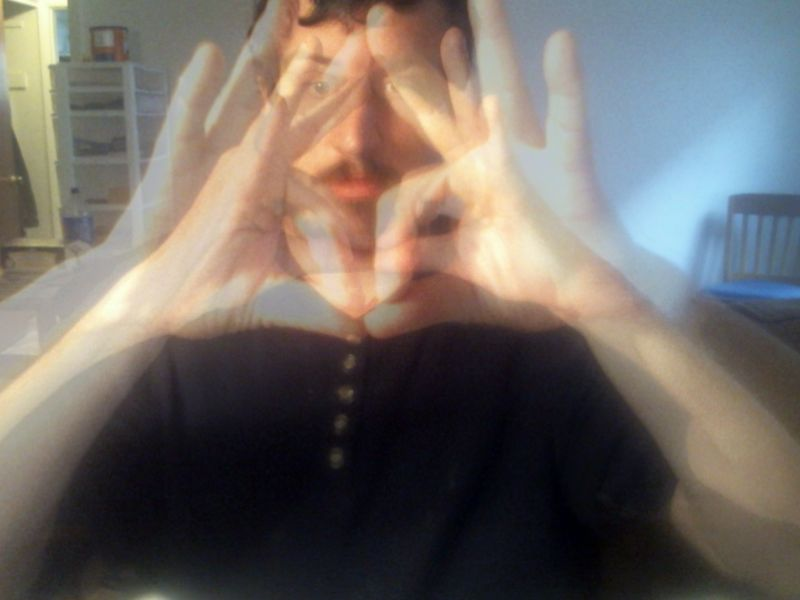

A Hot Couple Verses
Dropping lines on the times I was faced with I graced the stages of the places I was retracing my steps trying to find a manuscript that I had not written yet. I was writing like I was dying into an oblivion that I had never dared to enter into yet. Died three times last week and still made it to the podium for my turn to speak. Trying to unwind the divinity inside the lines of my writing I was trying to enlighten the sacrifices of my enticing diction that was worth more than writing fiction because you know the page does not lie and my writing voice is the one that’s going to make the world cry when I intone that I am the Christ that is just passing through time letting the words slip off my fingers like where is the harmony behind your eyes and if you have melodies let me listen to those notes like who wrote this masterpiece. I might be the least gangster in the land with my university degree behind me and I am delving into tantric might be the greatest lover since the man that walked on water over the seven seas. I am what you see coming out of UC and I don’t need to spit into a mic to let the world see who flows with the cosmos like I got my keys right in front of me as I unlock the door to my serendipity listening to hip hop beats on Spotify like I might be the reason why the world is turning out to be the flawless diamond of intelligence that it needs to be to make it out of the realms of existence it was never meant to see and how you gonna fuck hardcore on beeg nad not expect a man like me to see might be the unloved children of the parental units that were never meant to breed.
Im like changing mentions of methods of my style letting the world rest for a while while I dabble in the unseen letters of mayhem underneath the high beams of you need to see me in action to understand the words I gleam. Im like gunning full steam might have to get my laptop pull it out my pocket open the lock it of creativity on these beasts on the scene step into a coffee shop and project my project and let the projected income fall into my bank account. Im performance computing you don’t think this is soothing writing well I do fuck a grey goose and let me get drunk on some gin and tonic why bother I am hardly the fortune teller’s fortune that cannot predict my introspective ions that be shooting out of my sionic nature like a creature from the lock ness Im the mystical ethereal Lucius pixel coming through with a miracle that might set the whole club loose.
Might do something different like install a lap top from my back pocket into a power socket and let my fingers do the walking all the while im gonna be talking a different language because im fluent in like seven ranges of intellect and I ain even done pronouncing my English yet and as you follow along on the page I could serenade a tempest with a tantrum that makes me know that I am made and it ain even my kind of demeanor to worry about the grades all I need to do is pull out my chrome and my projector and and my screen and let the whole world see me being me letting the letters fall out of me full steam. Im like penning a pad that is lavish and glad to see the other writers putting their verses together full of the curses that keep the diction full of the fiction of the lifestyles of the rich or famous because you cannot be both and I could write a letter to the mayor or just cut my own throat.
No need to gloat Im the most original that made it over the moat in the human race which is the equivalent of some sperm that appeared and had no reason to understand it could never brace for the impact of the shine of the sun this or any previous year. Im like the broken jokes all seeped into the septum building up my momentum into a diatribe that might anger more than one guy when they learn how made my earnings and the funny thing is. I did it on the first try.